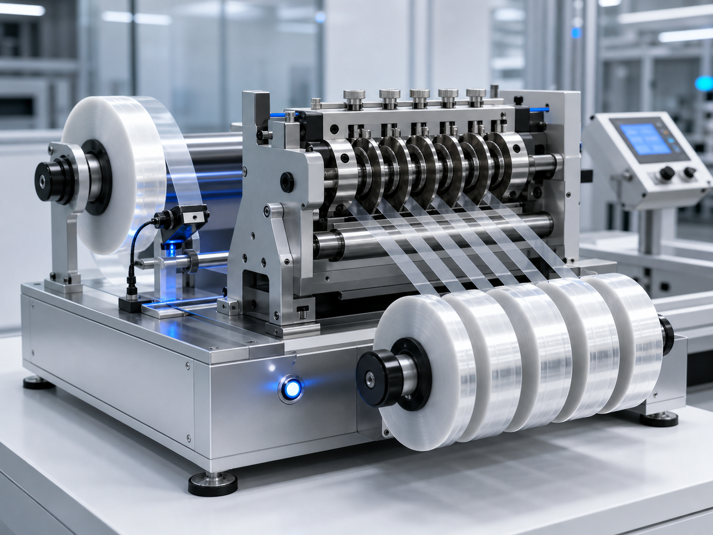

精准分切能力
可对索尼（迪睿合）、日立、特来福思等各大品牌 ACF 导电胶进行精准分切，极限精度可以做到 0.4mm*100m、0.5mm*100m、0.6mm*100m。
ACF Slitting
精准分切索尼（迪睿合）、日立、特来福思等各大品牌 ACF 导电胶，面向小宽幅、高稳定性和快速交付场景。

可对索尼（迪睿合）、日立、特来福思等各大品牌 ACF 导电胶进行精准分切，极限精度可以做到 0.4mm*100m、0.5mm*100m、0.6mm*100m。
设备面向稳定连续分切设计，适合常用型号快速加工和交付，减少常规分切方式带来的波动。
快速稳定分切，良率 100%，效率是常规机的数倍，适合对交期和一致性要求较高的客户。
设备技术遥遥领先，远超国产其他分切设备商，可作为 ACF 现货供应和定制宽幅服务的重要配套能力。
Ready to quote
联系 黄工，提供结构、型号、胶宽、卷长和应用场景，我们会尽快协助确认。